Ten character turnarounds in the bright, painted style of the horse and goat. Each sheet shows front, right-facing profile, back, and left-facing profile. Use them to compare character shapes, outfits, and markings.
The new sheets guide future modeling. Horse and goat are included below as the existing painted-model baselines.
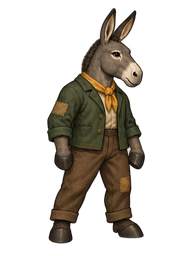
New modeling reference
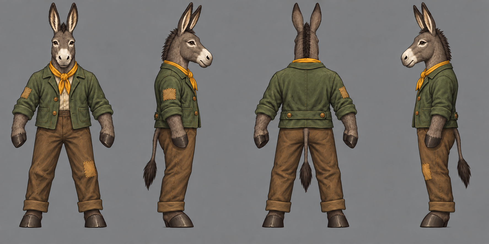
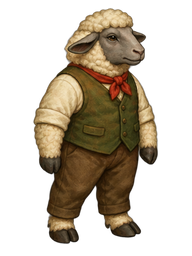
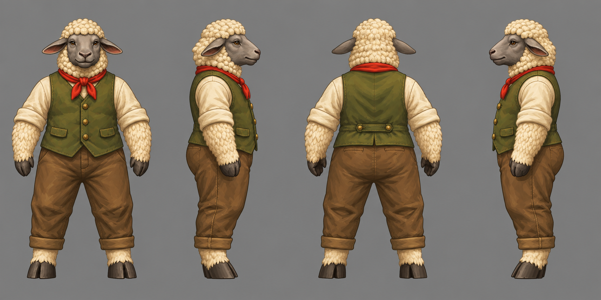
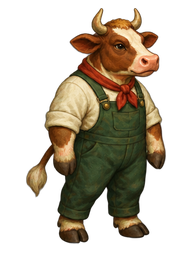
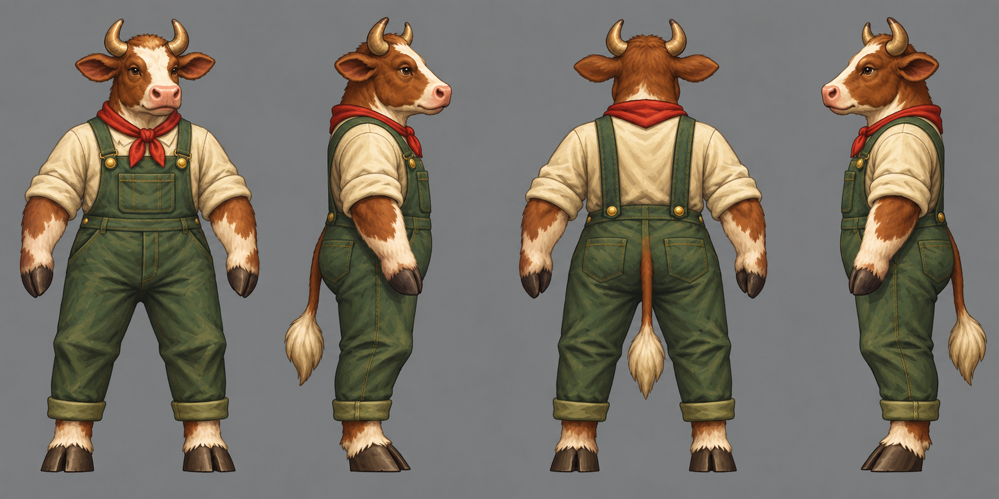
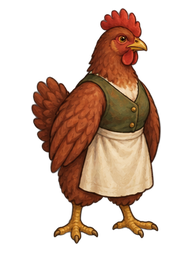
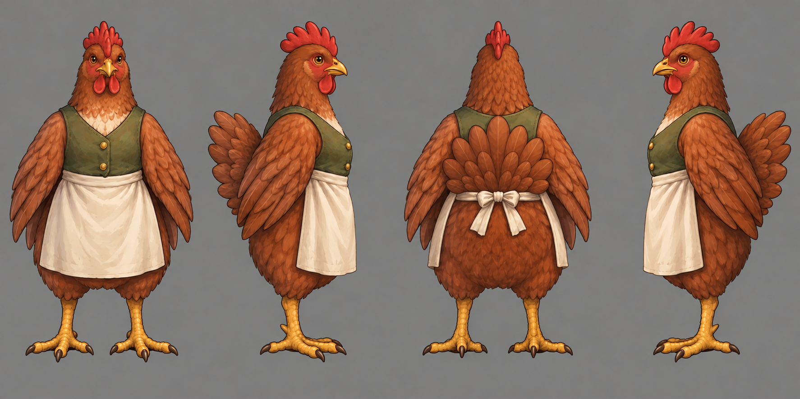
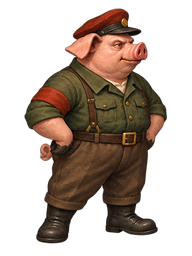
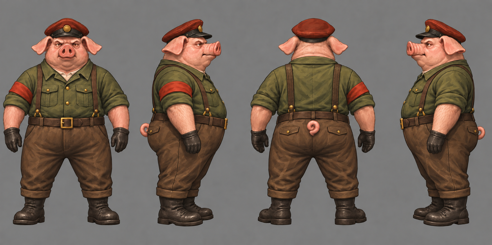
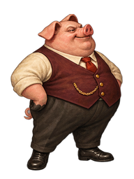
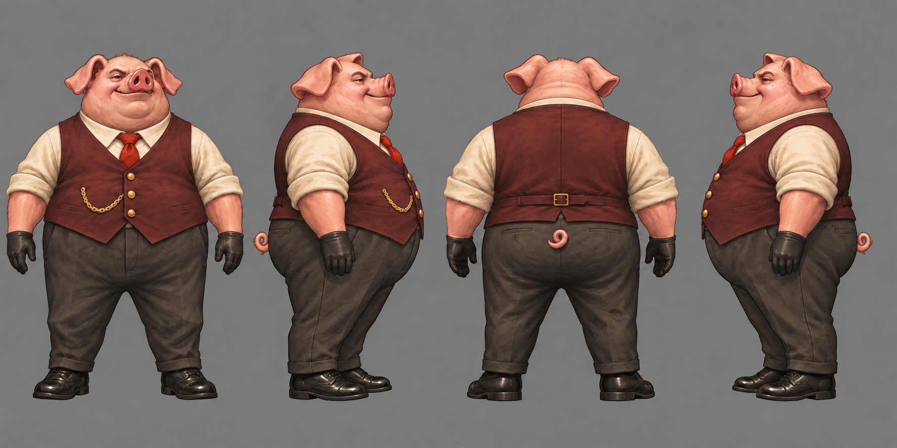
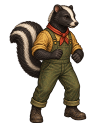
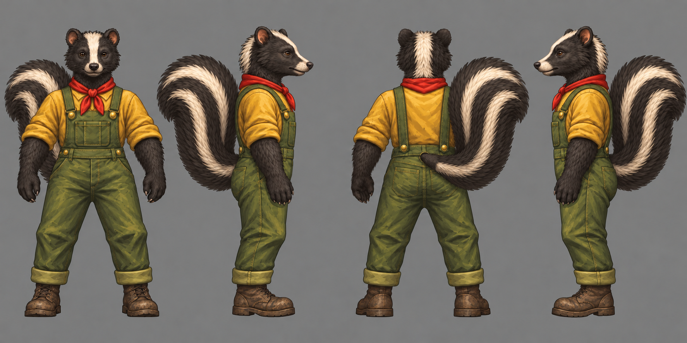
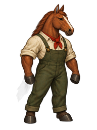
Existing painted-model baseline
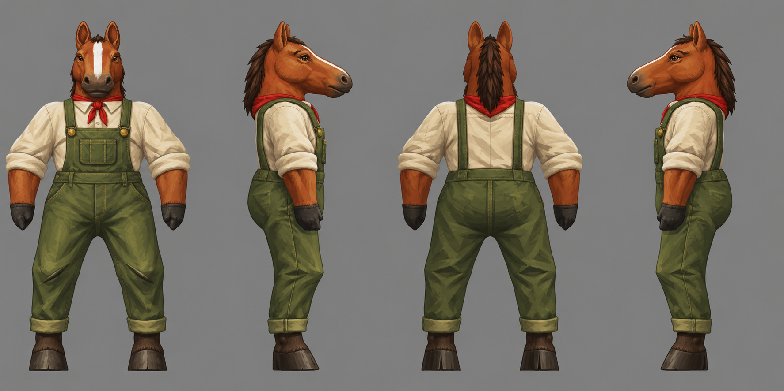
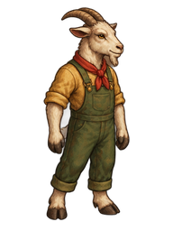
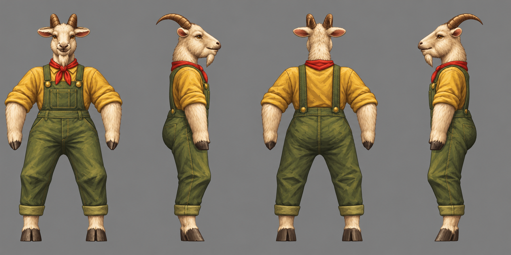
New hornless character · cream shirt, olive overalls and red scarf
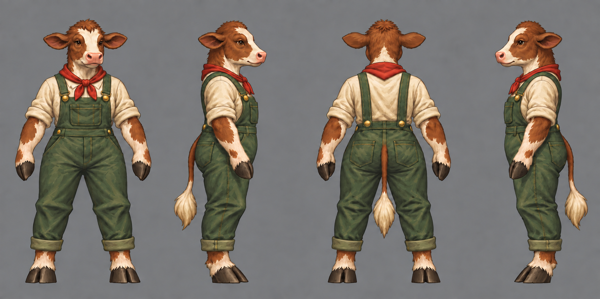
New species · long leaf ears, furry hind feet and practical overalls
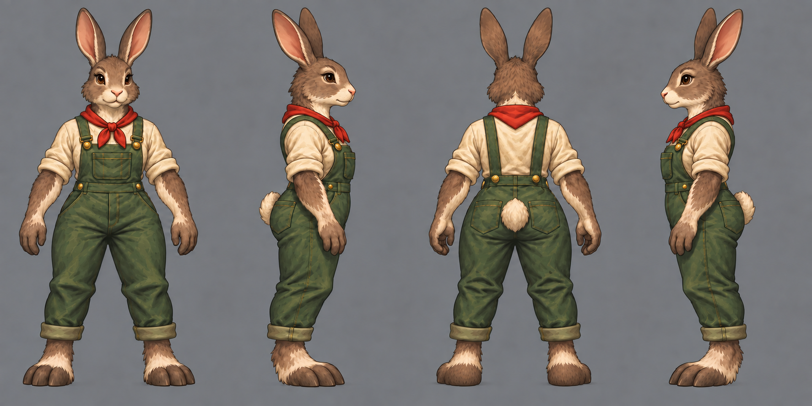
New character · collared work jacket, utility pouches and a relaxed tail
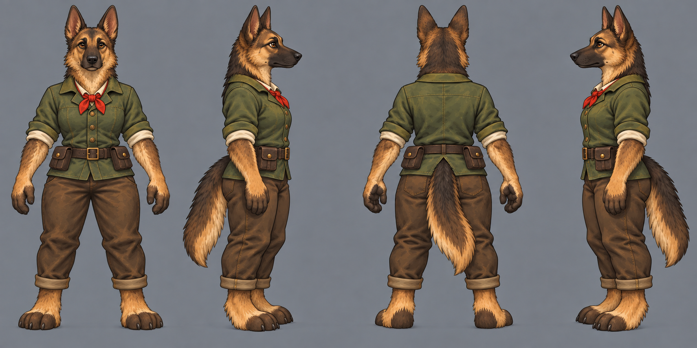